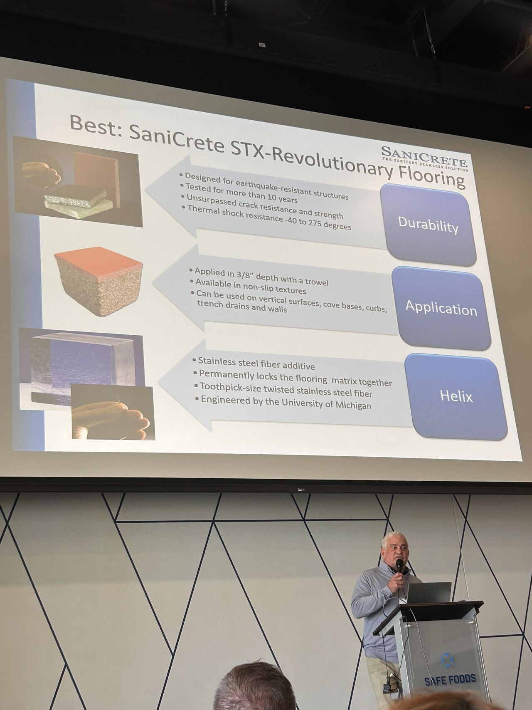
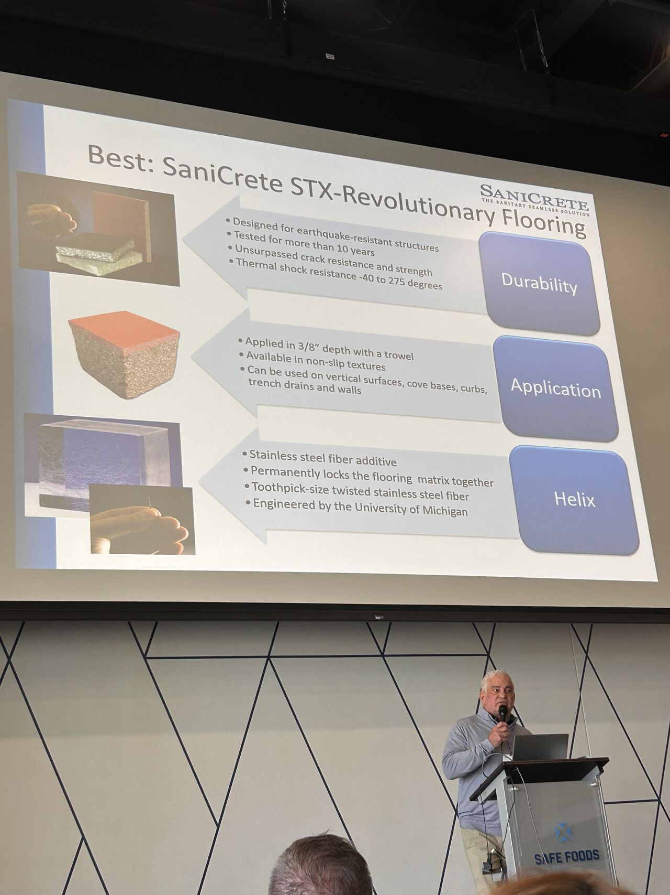

Last week our team attended the Fortrex Food Safety Workshop in North Little Rock, and we came back energized and full of ideas. There's nothing quite like face-to-face collaboration with the people who are actually solving food safety challenges every day.
Keith Kwasny Presents on Hygienic Flooring
 

Keith Kwasny took the stage to present on hygienic flooring solutions for food processing facilities. The presentation covered what makes SaniCrete STX different — from its stainless steel fiber reinforcement and thermal shock resistance to its seamless, USDA-compliant finish that eliminates the harborage points traditional flooring leaves behind.
Why Flooring Matters for Food Safety
Flooring is one of the most overlooked components in a food safety program. A cracked, delaminated, or improperly sealed floor creates harborage points for bacteria, allows moisture infiltration, and makes thorough sanitation nearly impossible. The right flooring system isn't just about durability — it's a critical part of your food safety infrastructure.
Events like the Fortrex Food Safety Workshop bring together the people making these decisions — food safety managers, plant engineers, sanitation directors — and give us a chance to share what we've learned from 30+ years of installing flooring in some of the toughest processing environments in the country.
About the Fortrex Food Safety Workshop
The Fortrex Food Safety Workshop, held November 12–13, 2025, brought together food safety professionals from across the industry to discuss the latest challenges and solutions in food processing safety. SaniCrete was proud to be part of the conversation.
If you're attending an upcoming industry event and want to connect, reach out — we're always happy to talk flooring.